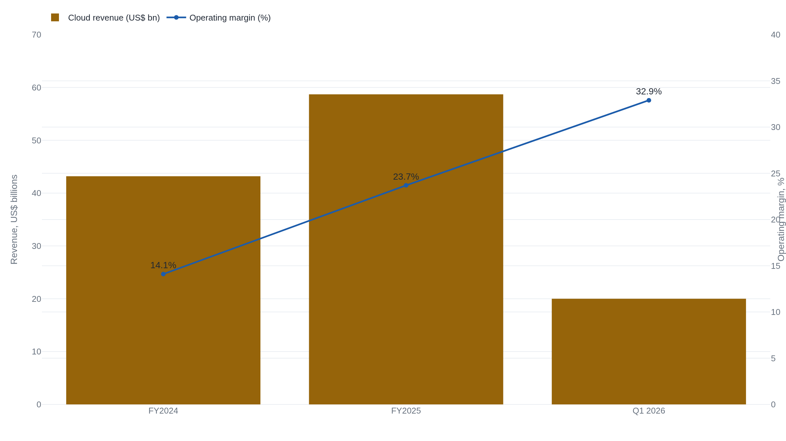
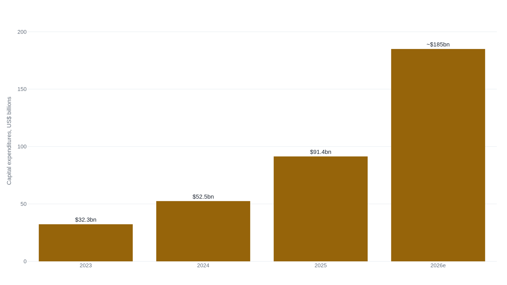

Google's ad auction ran hotter in 2026, not colder
The auction that funds two-thirds of Alphabet monetized better than ever in early 2026, which is exactly why the exposures worth pricing sit one step downstream of the reported line.
One query, priced in the time it takes to load
In the three months ended March 31, 2026, Alphabet booked $109.9 billion in revenue, and $60.4 billion of it, fifty-five cents of every dollar the company took in, came from the box a user types a search into.1 Follow one query into that box and the machine underneath it is visible. The words are auctioned. Advertisers bid to appear against them, and the winner is not simply the highest bid: Google ranks each entrant by ad rank, the bid multiplied by a measure of the ad's quality and expected relevance, so a more useful ad can outrank a richer one. The advertiser is charged only if the user clicks, at a cost-per-click the auction sets in that fraction of a second. Two numbers Alphabet still discloses, multiplied, are most of the revenue in a query: paid clicks, how many ad clicks advertisers bought, and cost-per-click, the average price of one.1
A third lever sits above both. Ad load is how many commercial slots Google chooses to place on a results page, and it is the dial the company turns to trade the quality of the page against near-term revenue. The durable-moat case is that every one of these moved the right way at once. In the first quarter of 2026 paid clicks rose 13% and cost-per-click rose 5% year over year, so both the volume and the price of a click went up, and Google Search revenue rose 19%.1 Advertising across Search, YouTube, and the third-party Google Network came to $77.3 billion, 70% of the company, the same share Alphabet drew from advertising across the whole of 2025.12 Whatever the answer engines are doing to the results page, they coincided with the best-monetizing quarter Alphabet discloses.
| Segment line | Q1 2026 | Share | YoY |
|---|---|---|---|
| Google Search & other | $60.4bn | 55.0% | +19.1% |
| YouTube ads | $9.9bn | 9.0% | +10.7% |
| Google Network | $7.0bn | 6.3% | -3.9% |
| Subscriptions, platforms, devices | $12.4bn | 11.3% | +19.3% |
| Google Cloud | $20.0bn | 18.2% | +63.4% |
| Other Bets | $0.4bn | 0.4% | -8.7% |
The two engines that are not the auction
The auction monetizes intent: a user who searches has told Google what they want to buy. YouTube monetizes the other half of a person's attention, the time spent rather than the thing wanted, and it ran $9.9 billion of ads in the quarter, up 11%, a large, slower-growing annuity on the same advertiser base.1 It is not where the story turns.
Google Cloud is. It cleared $20.0 billion of revenue for the first time, up 63%, and its segment operating income reached $6.6 billion for an operating margin of 32.9%, against 17.8% in the same quarter a year earlier.13 The number that argues is not the revenue level but the two ratios moving together: growth accelerating while margin roughly doubles. A business earning roughly half that margin a year ago is now both scaling and fattening at once, which is the rarer combination, because scale usually buys growth by spending margin. Alphabet says Cloud's order backlog passed $460 billion, nearly doubling in a quarter, a company figure the disclosed margin line already corroborates.4

One line in the same table cuts the other way and is worth holding onto: the third-party Google Network, the ads Google places on other publishers' pages, shrank 4% to $7.0 billion.1 "Google ads" is not one franchise but three with different fates, and the shrinking one is the part Google does not own the page for.
The answer that replaces the link
Here is the bear's sentence, in the voice a bear would sign. Google's power was never the ten blue links themselves; it was that Google controlled the demand and rented out the exit. A user arrived at the page, and Google auctioned the moment before sending them onward into an abundance of other people's pages, taking a toll on the way out. Generative AI inverts the arrangement the franchise quietly rests on. As Ben Thompson put the general case, when the model answers, "there isn't an abundance of supply... there is simply one answer," and a page that ends in an answer has no exit to auction.5
That is not hypothetical, and the cleanest measurement of it is not Alphabet's. Pew Research Center watched the actual browsing of 900 U.S. adults who shared their activity in March 2025, and found that users clicked a traditional result link on 8% of the search pages that carried an AI summary, against 15% of the pages without one. Just 1% of visits to a page with an AI summary produced a click on a source cited inside that summary, and users ended their browsing session on 26% of AI-summary pages versus 16% of the rest.6 Roughly a fifth of the searches in the study produced a summary at all. This is association in observational data rather than proof that the summary caused the drop, and the panel is a self-selected 900 people, but the direction is exactly what the bear predicts: where the AI answer appears, the click economy that funds Search is measurably thinner.6
Now set that beside Alphabet's own numbers, which point the opposite way. Pew counts per-page link clicks on a sample of organic results; Alphabet's paid-clicks metric is total ad-click volume across all of Search, and it rose 13% a year later.16 The two do not collide arithmetically. Total ad clicks can climb on query growth and new formats even while any single page with a summary yields fewer, and Google increasingly places ads inside AI Overviews and AI Mode, so an answer that suppresses the organic link can still carry a paid one. The erosion Pew found has not reached the reported line, and the exposed joint is not this quarter's paid-click count but the ad load a page of answers will bear. Alphabet, for its part, says users "love" AI Overviews and are searching more because of them,4 and that its Gemini Enterprise paid users grew 40% in a quarter,3 its own account of its defense rather than an outside read.
The erosion Pew found has not reached the reported line; the exposed joint is the ad load a page of answers will bear.
The contracts that put the box everywhere
The auction only runs if the query arrives, and for two decades Google made sure it did by paying to be the default search engine in other companies' browsers and phones. That expense has a name on the income statement, traffic acquisition cost, and it is not small: TAC was $15.2 billion in the first quarter alone, 19.7% of the Search and Network revenue it buys, down from 20.6% a year earlier.1 A federal court has now ruled that the largest of those payments bought something illegal.
- Stage
- Liability found Aug. 2024; remedies ordered Sept. 2025
- Question
- Whether exclusive default-placement contracts unlawfully maintained a monopoly in general search
- Stakes
- The distribution channel that delivers the queries funding $60bn of Search revenue a quarter
Judge Amit Mehta's August 2024 opinion is not ambiguous: "Google is a monopolist, and it has acted as one to maintain its monopoly."7 The court measured Google at 89.2% of the general-search market by query volume, rising to 94.9% on mobile, against Bing's 5.5% and 1.3%, and found that in 2021 Google paid $26.3 billion in revenue share to distribution partners, its single greatest expense that year, to Apple, Mozilla, Samsung, and the U.S. carriers, to keep its search box the default.7 That $26.3 billion is a subset of TAC, the part spent specifically on default placement, and it is the mechanism the case is about.
The remedy, in September 2025, cut both ways. Judge Mehta barred Google from any exclusive default contract for Search, Chrome, Assistant, or the Gemini app, and ordered it to share certain search-index and user-interaction data, though not ads data, with qualified competitors. But he declined to force Google to sell Chrome or Android, writing that the plaintiffs had overreached, and he expressly preserved Google's right to keep paying for non-exclusive placement, on the reasoning that cutting off the payments would impose "crippling" harm on the partners that depend on them.8 The market read it as milder than feared, and on the payments question it was. The durable-moat side can fairly point out that Google keeps both its browser and the right to buy placement; the bear can as fairly point out that the exclusive-default architecture Google spent $26 billion a year building is now dismantled by court order. Both readings come from the same ruling, and the ruling itself names the reason the remedy matters less than the shift underneath it: "The emergence of GenAI changed the course of this case," the court wrote, because the threat to Google's search monopoly is no longer the rival search engine the contracts were built to block but the chatbot that answers the query without one.8
The bill for staying ahead of the answer
Answering the query rather than indexing it costs vastly more to run, and Alphabet is paying for the capacity now, in advance of the return. Capital expenditure, the money spent on data centers, servers, and the chips inside them, went from $32.3 billion in 2023 to $52.5 billion in 2024 to $91.4 billion in 2025, and management has guided 2026 spending to $180–190 billion, a figure it raised from the $175–185 billion range it gave three months earlier and one that landed, when first disclosed, well above the roughly $120 billion analysts had penciled in.29

The scale is easier to read against the cash the business throws off. Alphabet spent $35.7 billion on property and equipment in the first quarter, against $45.8 billion of operating cash flow, so capital spending already absorbs roughly four-fifths of the cash the company generates, and the machines it buys do not vanish once bought: depreciation of property and equipment rose from $15.3 billion in 2024 to $21.1 billion in 2025 and climbs with every quarter of building.12 Today's capex is tomorrow's cost line, and the return on it has to show up before the depreciation does.
Which makes the quarter's most quoted number the most misleading one. Net income rose 81% year over year to $62.6 billion, a figure that flatters the story of a company out-earning its spending.3 But $36.9 billion of the quarter's pre-tax gains were an unrealized mark-up on Alphabet's non-marketable equity stakes, the paper value of startups it holds, whose carrying value jumped from $64 billion to $101 billion in three months and touched the income statement without a dollar changing hands.1 Strip it out and the operating business grew about 30%, with operating margin widening from 34% to 36.1%.3 That is a genuinely strong result, and it is the number the capex has to be judged against. The 81% is not.
Where the belief is exposed
Start with what does not break. The core of the machine is intent priced by auction, and on every disclosed measure it is monetizing better than ever: more clicks, at higher prices, on more queries, throwing off a 36% operating margin that funds everything else. That is more than half the company and it is not cracking. The consensus that Search is durable and that AI has, so far, been a net tailwind is not contradicted by a single line Alphabet reported this quarter, and a synthesis that agrees with the crowd owes the crowd that much.
The exposures are all one step downstream of that line, and they bite the same place. The first is ad load and click mix: Pew's thinner per-page click economy can coexist with rising total clicks right up until the page of answers cannot carry the ad load the page of links did, and no filing yet says which way that resolves.6 The second is distribution: the exclusive-default contracts that guaranteed the query arrived are being unwound by a court that has named the chatbot, not the rival search engine, as the real threat, even as Google keeps the right to pay for placement.8 The third is the bill: something near $185 billion a year of capacity is being built to answer queries at a cost the auction has not yet been asked to cover, and only Cloud so far earns a visible return on it.23
The bear does not need Search to be falling to be right; the fair version of the case is that the cost of defending the franchise and the mix of clicks inside it are both moving against Google at the exact moment a court is rewriting how the queries reach it, and that none of it is visible in the +13% yet. On the evidence Alphabet has filed, the market looks roughly right about the core auction and is pricing the joint between the auction and its three costs on faith.18
Sources
- Alphabet Inc. · Form 10-Q, quarter ended March 31, 2026 (SEC EDGAR) — revenue by type ($109.9bn total, Search & other $60.4bn), paid clicks +13% / cost-per-click +5%, TAC $15.2bn at 19.7%, the $36.9bn equity-securities mark-up in OI&E, and Q1 capex $35.7bn against $45.8bn operating cash flow
- Alphabet Inc. · Form 10-K, fiscal year ended December 31, 2025 (SEC EDGAR) — "more than 70% of total revenues from online advertising in 2025," capex $32.3bn (2023) / $52.5bn (2024) / $91.4bn (2025), depreciation of P&E $15.3bn → $21.1bn, and the intent to raise 2026 infrastructure investment
- Alphabet Inc. · Q1-2026 earnings release, Exhibit 99.1 to Form 8-K (SEC EDGAR) — Google Cloud operating income $6.6bn (margin 32.9% vs 17.8%), consolidated operating income $39.7bn at 36.1% margin (from 34%), net income $62.6bn (+81%), and Gemini Enterprise paid monthly active users +40% quarter on quarter (a company claim)
- Alphabet · Q1-2026 CEO earnings message, blog.google (company source, not independent) — Cloud backlog "over $460 billion," queries "at an all-time high," and users "love" AI Overviews and AI Mode; cited only as Alphabet's own claims about its defense
- Ben Thompson · Stratechery, "Aggregator's AI Risk" (Mar. 4, 2024) — the aggregation model (control demand, not supply) and where generative AI violates its premise: "there isn't an abundance of supply... there is simply one answer"; used as framing, not for any figure
- Pew Research Center · "Google users are less likely to click on links when an AI summary appears in the results" (July 22, 2025) — first-party browsing of 900 U.S. adults, March 2025: a link click on 8% of pages with an AI summary vs 15% without, 1% clicking a cited source, sessions ending on 26% vs 16%; association, not causation
- United States v. Google LLC · Memorandum Opinion (liability), No. 20-cv-3010 (APM), D.D.C., Aug. 5, 2024 — "Google is a monopolist," 89.2% of general search (94.9% on mobile) vs Bing 5.5% / 1.3%, and $26.3 billion of 2021 default-placement revenue share, Google's greatest expense that year
- United States v. Google LLC · Memorandum Opinion (remedies), No. 20-cv-3010 (APM), D.D.C., Sept. 2, 2025 — exclusive default contracts barred, no Chrome/Android divestiture, non-exclusive placement payments preserved, narrowed search-index and user-interaction data-sharing; "The emergence of GenAI changed the course of this case"
- CNBC · coverage of the Q4-2025 and Q1-2026 earnings calls — 2026 capex guidance of $175–185bn (Feb. 4) raised to $180–190bn (Apr. 29), against the roughly $120bn analysts had anticipated; reported management guidance, not a filed figure